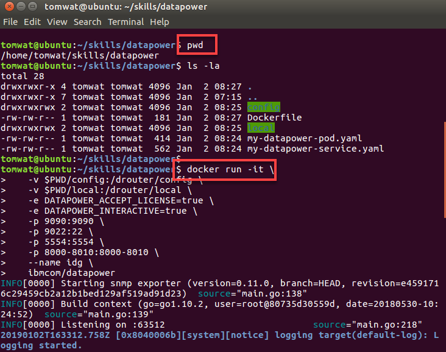
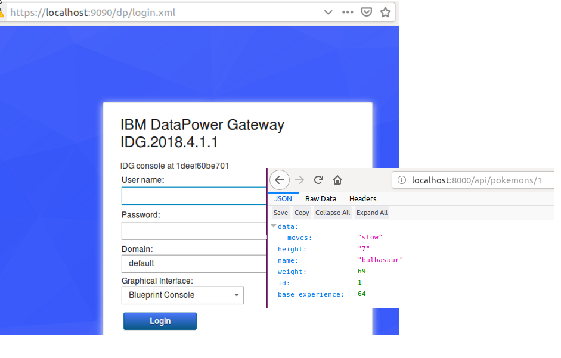
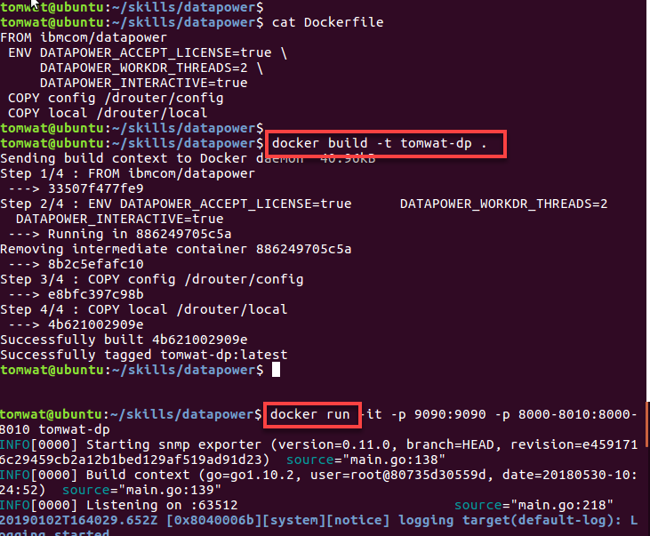
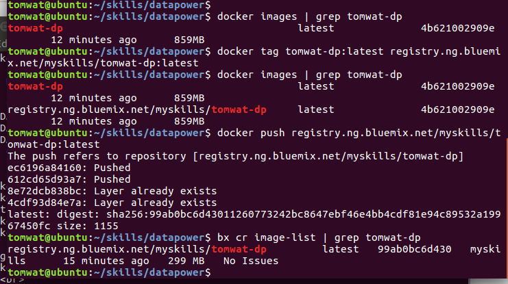

https://developer.ibm.com/datapower/config/
My plan is to maintain Datapower configuration on Dev workstation, test locally, push new images to IBM IKS, and deploy to Kubernetes (IKS). No git at this point.
mkdir datapower
$ cd $HOME/skills/datapower
$ docker run -it \
-v $PWD/config:/drouter/config \
-v $PWD/local:/drouter/local \
-e DATAPOWER_ACCEPT_LICENSE=true \
-e DATAPOWER_INTERACTIVE=true \
-p 9090:9090 \
-p 9022:22 \
-p 5554:5554 \
-p 8000-8010:8000-8010 \
--name idg \
ibmcom/datapower
https://localhost:9090
and:
http://localhost:8000/api/pokemons/1
kill container (CTRL-C)
$ docker ps -a | grep datapower
$ docker rm CONTAINER_ID
$ cat Dockerfile
FROM ibmcom/datapower
ENV DATAPOWER_ACCEPT_LICENSE=true \
DATAPOWER_WORKDR_THREADS=2 \
DATAPOWER_INTERACTIVE=true
COPY config /drouter/config
COPY local /drouter/local
$ docker build -t tomwat-dp .
$ docker images | grep tomwat-dp
//test image:
$ docker run -it -p 9090:9090 -p 8000-8010:8000-8010 tomwat-dp
$ docker rm Docker-ID
   